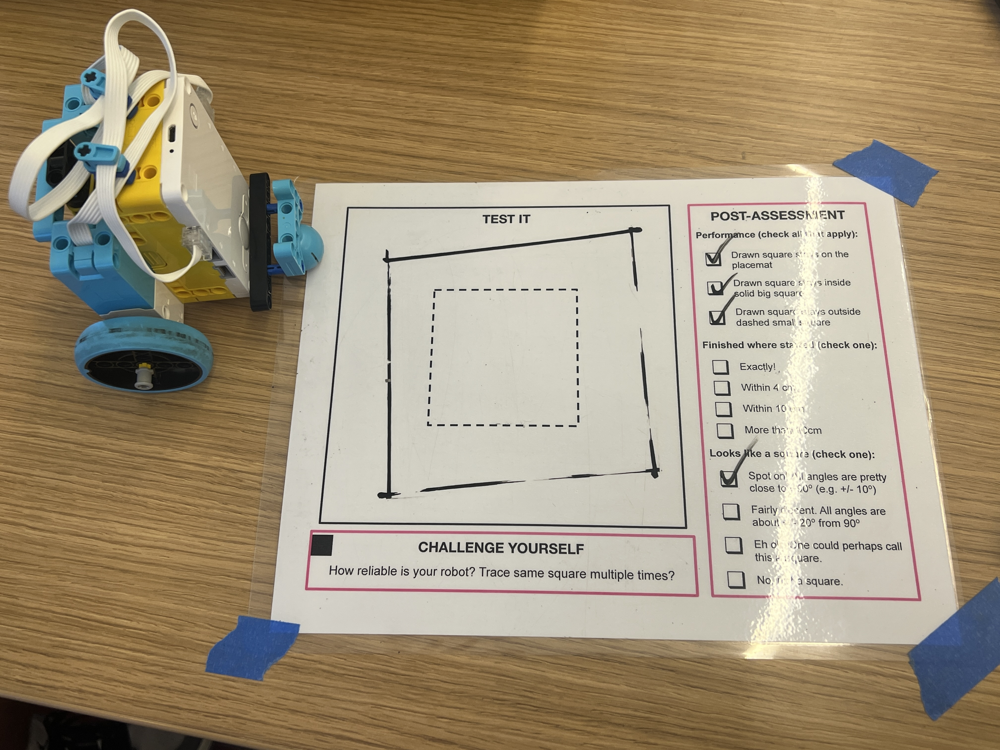

In this project we used skills like motor pairing, reverse wheel directions for spinning, and using the gyroscope, to make our robot draw a perfect square. The square had to have angles of roughly 90 degrees, with 4 equal sides. My final product was very close to a square, but due to the gyroscope, the angles were slightly off of 90 degrees. Click here to see my video